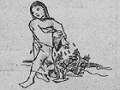

L'ICPA est une association privée créée par des amis et des collègues du journaliste Jack Lorski au lendemain de l'annonce de son meurtre en Écosse. Son seul but est d'aider les services de police et de justice internationaux à mettre fin le plus tôt possible aux agissements criminels du Phoenix.
SKL NETWORK est l'agence qui employait Jack Lorski. Elle a reçu et rendu public les deux CD-Roms envoyés par le Phoenix.
LIBERATION.FR a publié plusieurs articles sur l'affaire du Phoenix. Utilisez son moteur de recherches pour accéder à ses archives.
VICTIME N°5 : HELENA WHITFORD
- IDENTITÉ
Helena Whitford est née le 9 juillet 1981 à Birmingham où elle a vécu jusqu'en 2001. Elle était étudiante à l'université d'Oxford et y préparait un diplôme de théologie.
Après avoir perdu sa mère et sa s½ur Lilian dans un accident, ses rapports avec son père (directeur d'une agence bancaire) étaient assez tendus.
Elle a été recrutée au sein de Manus Domini par Mlle Thomson, une octogénaire qui semble avoir profité de l'influençabilité et de la fragilité d'Helena pour l'enrôler.
- PHOTO

- DATE ET LIEU DU CRIME
Le 10 mars 2002, le corps d'Helena Whitford est retrouvé dans les caves du Balliol College d'Oxford. - AUTOPSIE
Helena Whitford a été étranglée (lire le détail de l'autopsie dans le rapport de police reproduit plus bas). - ANALYSE
Helena Whitford est la cinquième victime connue du Phoenix. Le tueur l'a d'abord choisie parce qu'elle était membre de Manus Domini, condition sine qua non de sa vengeance contre cette société secrète.
Afin de respecter son rituel lié au parcours européen de son maître à penser, Giordano Bruno, le Phoenix a également choisi Helena Whitford parce qu'elle habitait à Oxford. En effet, dans cette ville, le philosophe italien scandalise les universitaires en soutenant l'héliocentrisme de Copernic lors d'un débat public organisé par George Abbot, membre du Balliol College. Celui-ci accusera plus tard Giordano Bruno d'avoir plagié Marsile Ficin.
Toujours en référence à son maître, le Phoenix a signé son crime en associant Helena Whitford à Vénus, le dixième principe élémentaire de la magie brunienne (De imaginum idearum compositione, 1591) :Une fille émergeant de l'écume de la mer, qui en s'approchant de la terre ferme essuie l'humidité de la mer de ses mains fines. […] Elle s'avance en faisant pousser derrière elle du lilas, des roses et violettes sur ses empreintes. - COMMENTAIRES DU PHOENIX
• « Les lieux ont une âme. Tout de blanc vêtue, elle avançait devant moi dans ce lieu chargé d'histoire, comme les autres. Celui-ci n'était pas choisi par hasard mais avec précision. »
• « La peur est belle. Je l'ai vue dans ses yeux. Crois-moi, H. W. n'était pas aussi pure qu'elle le clamait dans son journal intime. »
• « Oui c'était moi [qui l'ai rencontrée le 10 puis le 25 février 2002]
Je l'ai séduite pour pouvoir la sacrifier
Elle faisait partie de Manus Domini
Pourquoi elle et pas cette vieille peau de Thomson ?
Parce qu'à Oxford il me fallait Vénus…
Helena était belle comme Vénus sortant des eaux… »
- DOCUMENTS
• Extrait du rapport de police
« Nous transportons le corps à l'institut médico-légal d'Oxford où nous sommes reçus par le docteur Matthews, médecin légiste, à qui nous exposons les circonstances de la découverte du corps ainsi que les premiers éléments en notre possession.
Le corps repose sur le dos en salle d'autopsie.
Une étiquette fixée à la cheville porte les indications :
- Mlle Helena Whitford - N° OX-04708 - 1.67 m - 52 kg
Le docteur procède alors à l'autopsie à 10h20 et nous confie ses conclusions comme suit :
- Cause de la mort : Asphyxie par étranglement.
- Nombreuses traces de lacérations à la base du cou.
- Traces de brûlures post mortem sur le front en forme de symbole marqué au fer rouge.
- Lésions de lutte (contusions à l'épaule droite et aux genoux).
- Lésions de défense (ongles cassés).
- Les prélèvements de sang, humeur vitrée, d'urine, viscères, de phanères (ongles et cheveux), anaux, buccaux, vaginaux ont été effectués aux fins d'examens et sont conservés à l'institut pour analyse.
- La fille était vierge.
- Des résidus d'eau de mer ont été retrouvés dans les mains et les humeurs vitrées de la victime. »
• Extrait du journal intime d'Helena Whitford où elle raconte sa rencontre avec le Phoenix
« Quand je suis arrivée à la maison de Virginia, j'étais perdue au milieu de tous ces gens que je ne connaissais pas. Personne à qui parler. J'avais emprunté un manteau en mouton doré de Miss Thomson et je me sentais ridicule. Puis je l'ai remarqué. Il se tenait aussi à l'écart des autres. Je lui ai demandé s'il faisait partie de la famille de Virginia. Il était un peu plus vieux que la plupart des invités. Il m'a souri et m'a dit qu'il me connaissait déjà, il est un de mes lecteurs secrets. J'ai rougi jusqu'à la racine des cheveux, j'ai eu envie de rentrer sous terre et j'ai failli mentir et dire que je ne voyais pas de quoi il parlait. Je suis un voyageur égaré m'a-t-il dit et votre site était comme une oasis, une source d'eau fraîche. Au fait vous n'avez pas soif ? Comme par magie, il m'a tendu une coupe de champagne que j'ai avalée d'un trait dans mon trouble. Après j'étais saoule. Ivre de ses paroles. On a parlé. Il a une culture incroyable ! »
- LIENS
• Site personnel d'Helena Whitford
• Site des étudiants d'Oxford